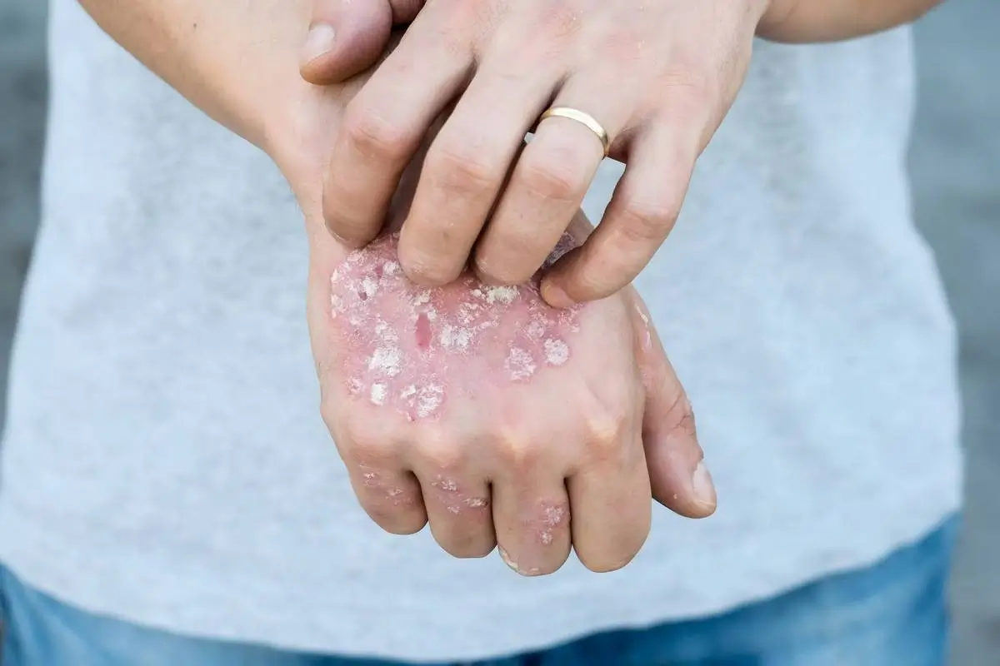
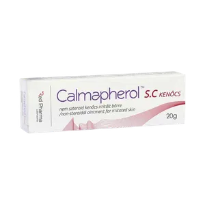

JPsA JIA ízületi gyulladásos bőrbetegség (pikkelysömör)
Ez a pikkelysömör nevű bőrbetegség a betegek számára rendkívül eltérő módon tud viselkedni, ezzel ellentétben viszont a betegeknél kivétel nélkül fellelhető bizonyos testrészeken.
A JPsA JIA altípus egyik jellegzetessége hogy kimondottan szeret megjelenni hajszáerekben gazdag testrészeken mint például az ujjak. Nagyon fontos hogy ez a bőrbetegség nem fertőző így egy egészséges ember nem kaphat el semmit az immunbetegségekből.
Milyen tüneteket okoz ez a betegség?
A pikkelysömör az egész testet érintő gyulladást okoz, így a bőr szövetei is gyulladtak. Ez azt eredményezi hogy minden egyes mikro sérülés egy újabb "trauma" a test számára ami annyira túlreagálja a sérüléseket hogy kemény pikkelyekkel próbálja óvni magát a további sérülésektől. A pikkelysömör bizonyos esetekben átterjedhet a körmökre is, köröm leválást, leesést is okozhat súlyosabb esetekben.

Mennyire gyakori a pikkelysömör a JPsA altípuson belül?
Ezen az altípuson belül szinte kivétel nélkül jelentkezik pikkelysömör mivel az immunrendszer az egész test gyulladását okozza.
Gyakran azonban az is előfordul hogy a bőrtünetek évekkel megelőzik az egész testet érintő aggresszív gyulladást. Ez esetben csak az érintettek bőrrétegeit érinti a gyulladás, máshol nem kimutatható, ezért bőrtünetből soha nem lehet biztosra kijelenteni hogy valaki JPsA-ban szenved.
Mivel kezelhető a pikkelysömör?
A pikkelysömör a bőrrétegek gyulladása miatt gyulladáscsökkentő krémmel hatékonyan kezelhető. Ez a specifikus krém kifejezetten a pikkelysömörre lett kifejlesztve, amely megpuhítja a kemény és érdes pikkelyeket, ezzel csökkentve a sérülés esélyét.
A pikkelysömör aggresszív formában okozhat bőrfájdalmat, köröm leválást vagy köröm leesést, épp ezért fontos hogy minnél hamarabb kezelve legyen, megelőzve a maradandó köröm vagy bőrkárosodásokat.
